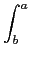
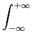

suivant: La fonction erf :
monter: Les réels
précédent: La fonction de Heaviside
Table des matières
Index
La distribution de Dirac : Dirac
Dirac a comme argument un nombre a.
Dirac est la distribution de Dirac, c'est la distribution associée
à la fonction Heaviside.
On a par définition :
Dirac(
x) = 0 si
x 
0 et

sinon
et si a  0 et b
0 et b  0 on a :
0 on a :
Dirac(x)dx = 1
Dirac(x)f (x)dx = [Heaviside(x)f (x)]ba - Heaviside(x)f'(x)dx = f (0)
Dirac(x)*f (x)dx = f (0)
On tape :
int(Dirac(x)*sin(x),x,-1,2)
On obtient :
sin(0)
On tape :
int(Dirac(x-1)*sin(x),x,-1,2)
On obtient :
sin(1)
Documentation de giac écrite par Renée De Graeve